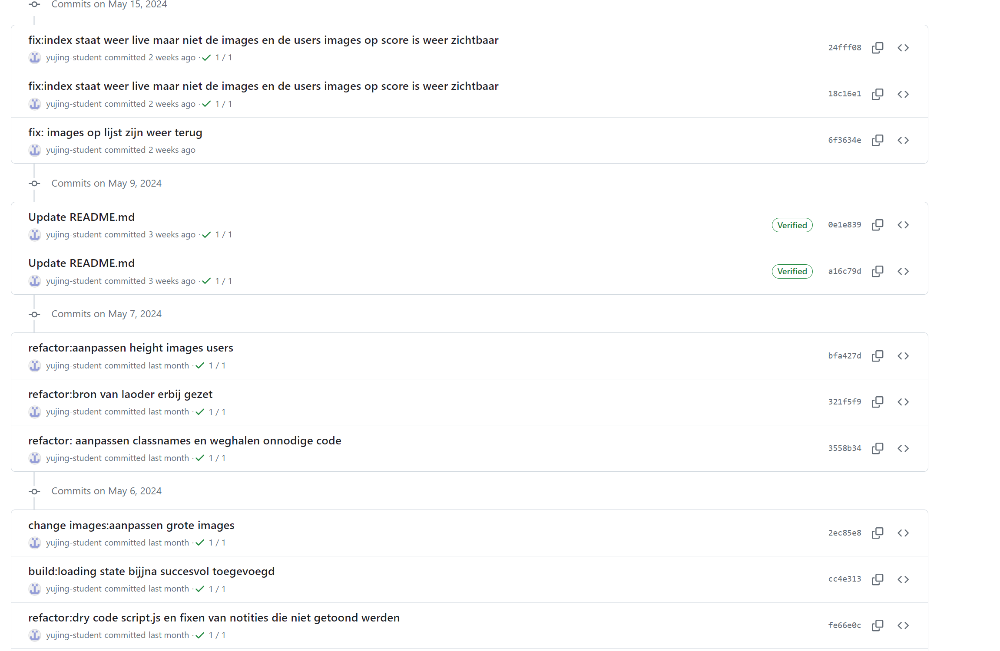

Nieuwste ontwikkelingen
Ik heb me ingeschreven op css weekly, frontend focus, en javascript weekly en daar krijg ik iedere week interessante emails van over. Verder maak ik ook gebruik van daily dev een chrome extentie waardoor ik als ik chrome open direct nieuwsartikelen kan lezen.
sprint 10
Tijdens sprint 10 gingen we kijken naar progressive enhancement en naar performance hoe je een website het op oude apparaten doet en ook nog snel is.
Ik heb op shopify een artikel gelezen die goed uitlegde wat progressive enhancement is artikel over pe
Ook kwam ik op linkedin een interessant artikel tegen over performance. link naar het artikel
Via daily dev ben ik een artikel op dev.to tegengekomen met uitleg over het professioneel schrijven van commits en dit probeer ik ook toe te passen. Link naar het artikel.
Ik wil mijn css ook meer structureren en toen ben ik dit artikel tegengekomen dat op een simpele manier uitleg geeft over BEM. Link naar het linkedin artikel.
Toegepast in mijn werk
professionele commits
In sprint 10 heb ik geprobeerd om mijn commits beter te schrijven en professionelere waardoor ik zelf ook beter weet wat ik per commit gedaan heb. 
Structuur css
Ook heb ik geprobeerd om mijn css beter te structureren en heb ik BEM proberen toe te passen in mijn css.
link naar code
Ook heb ik deze sprint gefocust op eht goed schrijven van de css en dit artikel heeft mij daarbij geholpen van daileydev
link naar daily dev artikel

Progressive enhancement en performance
In de wiki lees je hoe ik rekening hou met de gebruiker en let op performance en progressive enhancement en de frontend developer checklist gebruik link naar wiki met de frontend developer checklist
Sprint 8
Dit gaat over artikelen die ik gelezen heb en de inhoud bekijk om inspiratie op te doen of om te gebruiken binnen mijn werk.
Design artikelen
- Door dit artikel te lezen ben ik beter in het gebruiken van Figma. Link naar het artikel
- Principes of ux design dit artikel heeft mij geholpen om meer logica op een website te zien en het artikel van joshua porter helpt ook in het maken van designkeuzes. Principles of userinterface design
- Een voorbeeld van een goed design als artikel op dev.to voorbeelden van een goed design
- Ik krijg iedere week emails van css weekly en daarin zag ik een tutorial over :ls teken dat dat dit makkelijker te gebruiken is en hier wil naar gaan kijken in sprint 9 link naar het artikel
Toegepast in mijn werk
Ik denk dat ik deze design principles goed heb toegepast.
- Interfaces exist to enable interaction dit is de navbar met daarin de navigate waardoor je van de ene naar de andere pagina kan gaan.
- Clarity Zorg ervoor dat je pagina duidelijk is en dat een gebruiker weet waar die is en wat die kan doen.
- Progressive disclosure Ik heb in sprint 8 een zoekfunctie gemaakt en dit is een vorm van progressive disclosure omdat de gebruiker de optie heeft om hier gebruik van te maken
Ik heb op deze pagina geprobeerd het zo simpel mogelijke te houden waardoor je als gebruiker direct de huizen ziet en je naar het huis kan gaan link naar de pagina
Websites en apps die ik gebruik als ik vastloopt
Als ik vastloop dan maak ik gebruik van blogs zoals dev to daar staan interessante artikelen die handig zijn. En Codingbeast hier zoek ik bijvoorbeeld informatie op als ik vastloop of ik begrijp bepaalde stof niet. Een voorbeeld is dit uitleg over promises
Verder volg ik op Instagram 2 accounts die meestal relevante tips geven over bijvoorbeeld design en over code. Het 1ste account gaat vooral over code link naar account 1 het 2de account gaat over design en hoe je dit beter kan doen link naar account 2
linkjes van instagram posts
Onderstaand zijn links van instagram post die ik bewaar omdat ik denk dat dit nog handig is.
- Ik heb gelezen dat er een nieuwe manier is om css media query te schrijven en die wil ik ook gaan toepassen in sprint 9
- Uitleg over de debugger
- Simpele uitleg over keys values entries dus over objects
Dit zijn linkjes naar instagram post die ik bewaar en vooral over lesmateriaal gaan die we nu krijgen zoals async await en fetch api.
sprint 7
Tijdens sprint 7 gingen we op de server aan de slag en hiervoor ben ik op zoek gegaan naar de laatste ontwikkelingen op dat gebied. En uitleg erover en online tutorials zoals voor een zoekfunctie of om code beter te begrijpen.
- Uitleg over json om te gebruiken bij het begrijpen van de code.
-
Uitleg over een
simpele zoekfunctie.
- Ik krijg javascript weekly iedere week een email met
daarin de nieuwste
ontwikkelingen en artikelen erover.
Ook kijk ik of er nog iets relevants bij zit wat ik kan gebruiken in een project. Link naar 1 van hun artikelen
Link naar mijn code hoe ik de zoekfunctie heb toegepast
server.js
ejs file